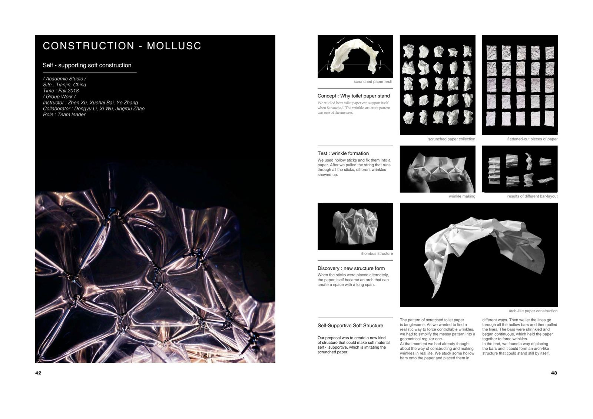
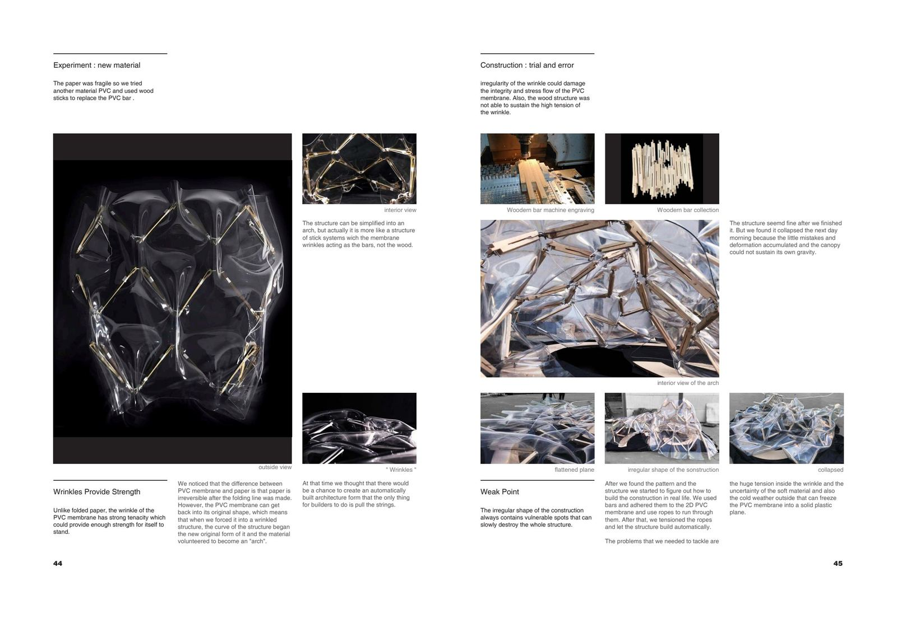
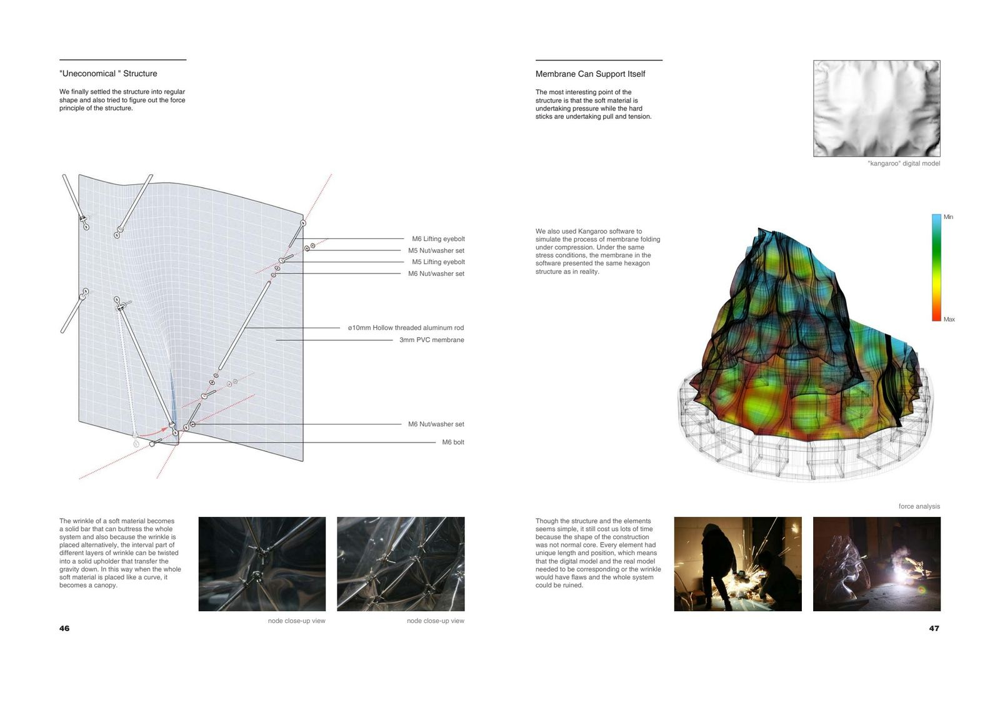

This project began with a simple observation: how can toilet paper support itself when scrunched? The wrinkle structure pattern was the answer. Through a series of physical experiments, we discovered that when hollow sticks are placed alternately and pulled by a string, the resulting wrinkles in a membrane create an arch capable of spanning large distances.
The challenge was to translate the messy, organic patterns of crumpled paper into a geometrically regular, constructible system — ultimately creating an automatically erected architecture where the only task for builders is to pull the strings.


The paper prototype collapsed overnight because accumulated small errors in the fragile material couldn't sustain gravity. We switched to PVC membrane with wood sticks — discovering that unlike paper, PVC's folding is reversible, requiring a different approach to maintain the wrinkle structure.
The wrinkles of soft material become solid bars that buttress the whole system. Because the wrinkles are placed alternately, the intervals between layers can be twisted into solid upholders that transfer gravity downward. We used Kangaroo software to simulate the membrane folding process under compression.
